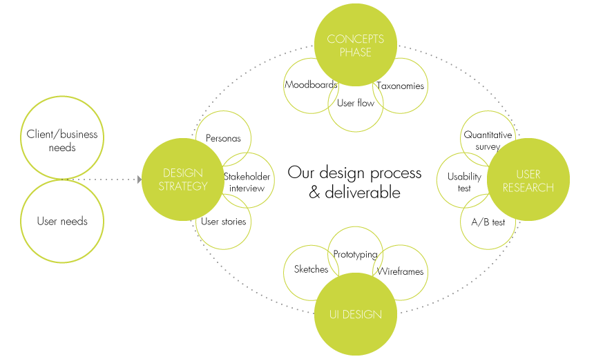

<!DOCTYPE html>
<html>
<head>
    <meta charset="utf-8"/>
    <meta http-equiv="X-UA-Compatible" content="IE=edge,chrome=1">
    <meta name="viewport" content="width=device-width,initial-scale=1.0,minimum-scale=1.0" />
    <style>
        html{
            height:100%;
        }
        body{
            height:100%;
        }
        .my-container{
            box-sizing: border-box;
            margin:0 auto;
            width:100%;
            height:100%;

            overflow:hidden;
        }
    </style>
    <link rel="stylesheet" href="css/bootstrap.css"/>
    <link rel="stylesheet" href="css/card-layout.css"/>
    <script src="js/jquery-1.11.3.js"></script>
    <script src="js/card-layout.js"></script>
</head>
<body>
    <div class="my-container">

    </div>
    <!--[if lte IE 10]>
    <script src="js/card-layout-ie.js"></script>
    <![endif]-->
    <script>
    var option={
        title:'Can you answer these questions?',
        items:[
            {
                name:'',
                summary:'What is UX?',
                content:'<ul><li>UX, or User Experience design evolved from physical product \
                design and has become increasingly important in the world of digital products \
                and services. It is an end to end process that includes all aspects of \
                the end­user’s interactions with your service or product. A philosophy \
                that guides everything from helping a business to understand what \
                they can and want to achieve with their product, to understanding \
                who your users actually are, what they need and want from the product \
                and all the way to making sure that the look and feel of the graphical \
                user interface fits with your branding.</li>\
                <li>Some people confuse UX with Graphic Design. Graphic Design,\
                 with its history in print, concentrates on visual \
                 communication and is often involved in branding and \
                 elements of web design and print material. UX however \
                 has become a vital part of the development process for \
                 most digital services and software. It shifts the focus \
                 to the whole design process and underpins this with a rigorous \
                 understanding of both the business and end users. Most importantly \
                 though it is understanding how users think and behave to guide \
                 the design of your service or product. Through user interviews, \
                 usability testing and other research methods, UX design will ensure \
                 that your product leaves users satisfied and meets their needs.</li>\
                <li>Most though it is importantly understanding how users think and behav……</li></ul>'
            },
            {
                name:'',
                summary:'Why UX is important?',
                content:'<ul><li>Any app, digital product or service lives or dies by its users. \
                The ability to give a pleasing experience to your users and have them keep coming \
                back is incredibly important. \
                UX design is an integral part of how to achieve this.</li>\
                <li>Successful products are simple, but powerful, presenting a \
                cohesive and coherent whole that enables the user to intuitively \
                understand how to interact with the product and achieve what they want. \
                They achieve a balance between enabling the user to access the features \
                they need whilst keeping it easy to use or understand.</li>\
                <li>Classic examples of excellent UX design are Apple products and \
                many BBC services such as iPlayer and the BBC news website. \
                Apple in particular are known for being intuitive and easy to use, \
                even to the many people whom have never heard of UX design. \
                This is a vital reason why Apple products sell so well and a powerful \
                example of why every company should pay heed to UX.</li>\
                </ul>'
            },
            {
                name:'',
                summary:'What is our Philosophy?',
                content:'<ul><li>“Simplicity is the ultimate form of sophistication.” – Leonardo da Vinci</li>\
                <li>We believe simple, aesthetic design can evoke an emotional response, \
                that what makes people passionate are great experiences. \
                That good design has the ability to keep things simple even \
                when they are complex. As a team we focus on creating meaningful \
                connections between users and their technology, informed by a deep \
                understanding of user interaction and behaviour. Ultimately, \
                we see the power of design as enabling us to change user behaviour.</li> \
                </ul>'
            },
            {
                name:'',
                summary:'How Can We Help You?',
                content:'<ul><li>Simply put, we take your ideas \
                and create a design that not only you, \
                but your users can be passionate about. For any Digital Platform.</li>\
                <li>We follow a consultative approach making sure \
                that at every step of the way your needs are met and \
                that the end product is distinctive, \
                intuitive and a pleasure to use.</li>\
                <li>Humanity Freed can either help with a fresh new project or \
                perhaps you’d like to refresh an older design?</li>\
                <li>Feel free to contact us to find out what we can do for you.</li></ul> \
                '
            },
            {
                name:'',
                summary:'What is our Service?',
                content:'<ul><li>Humanity Freed believe strongly in understanding not only the \
                requirements of your project but also the culture of your business, \
                so we tailor the management of each project to your needs not ours. \
                This can be a full, end to end service or any part thereof.</li>\
                <li>This can include:\
                    <ul class="native-apperance">\
                    <li>Mobile app design</li>\
                    <li>Responsive web applications and services</li>\
                    <li>Business to business software design</li>\
                    <li>End to end software and service design</li>\
                    <li>Digital product strategy</li>\
                    <li>User research and analysis</li>\
                    <li>Product UX review</li>\
                    <li>UX consultancy</li>\
                    </ul>\
                </li> \
                </ul>'
            },
            {
                name:'',
                summary:'What is our Process?',
                content:'' +
                ''
            }
        ]
    };
    $('.my-container').boxlayout(option);
</script>
</body>
</html>